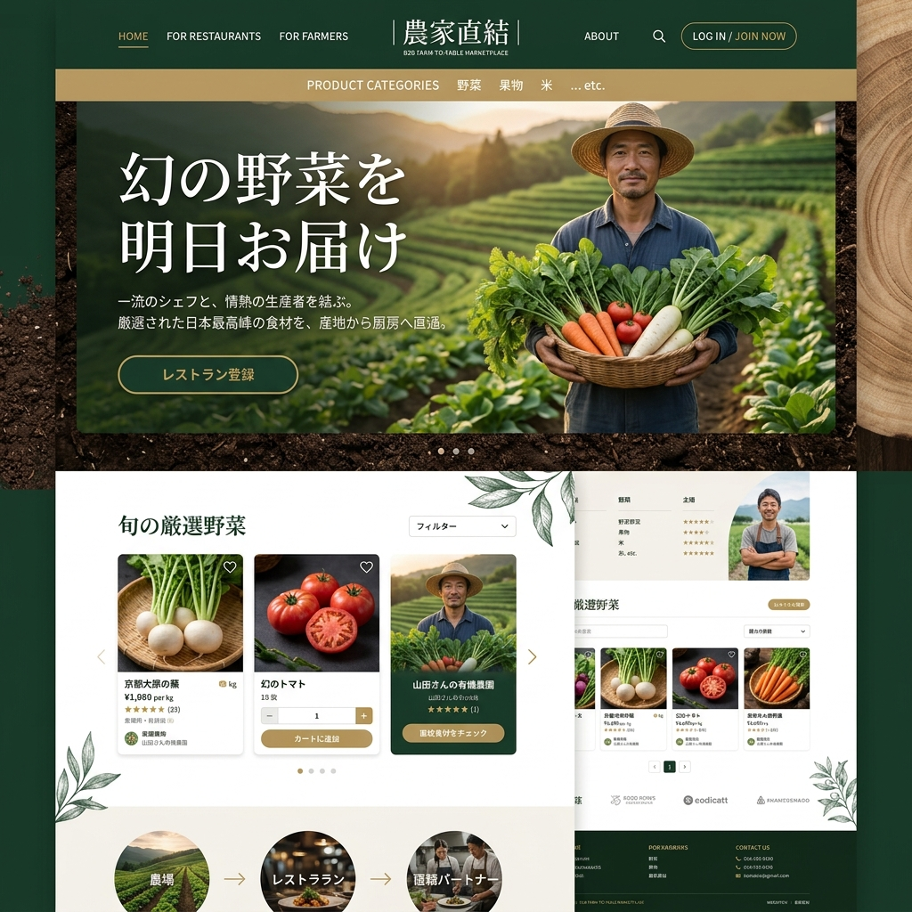

saas
最高峰の「幻の野菜」を、
最高峰の「幻の野菜」を、
畑から厨房へダイレクトに。
市場に出回らない希少な伝統野菜や規格外の絶品野菜。農協ルートでは評価されないその価値を、本当に求めている一流シェフに直接届けたい。中間マージンを排除した新しいB2B仕入れ網。

前日収穫オークション
「明日収穫予定」の野菜をプラットフォームに出品。全国のシェフがリアルタイムで競り落とします。
産地直送ロジスティクス
独自ルートの定温配送により、収穫から24時間以内に最高の鮮度で厨房まで届けます。
ダイレクトなフィードバック
シェフから農家へ「どう調理したか」「お客様の反応は」が直接届き、次期作付けのモチベーションアップに。